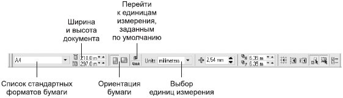
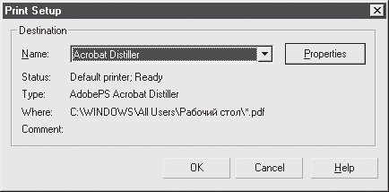
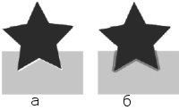
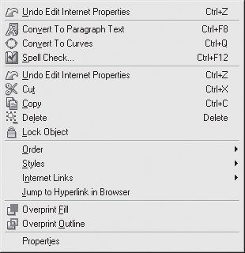
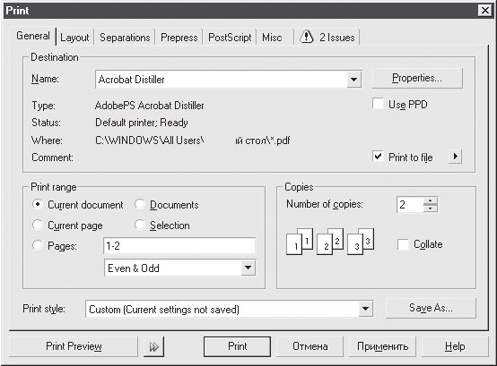
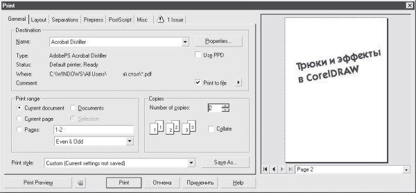
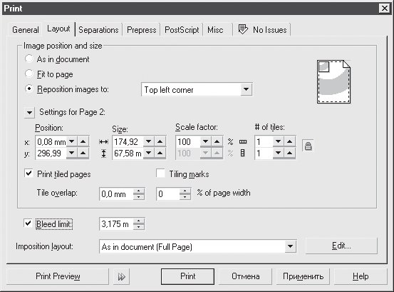
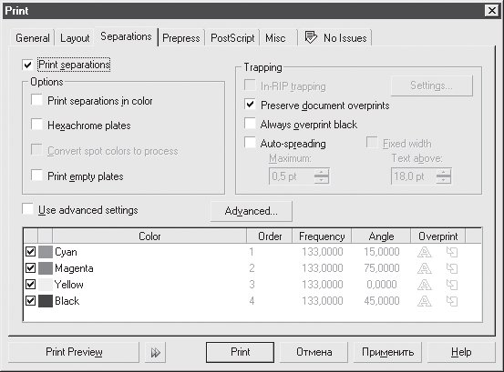
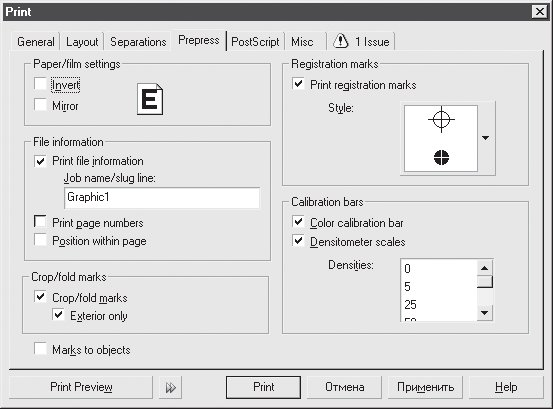

Лекция 13: Подготовка к печати и печать
Проблемные объекты
Десятилетний опыт работы в CorelDRAW позволил авторам убедиться в том, что при использовании этой программы часто возникают трудности с выводом на PostScript-устройства: принтеры и фотонаборные автоматы (ФНА). Некоторые объекты традиционно являются проблемными при печати на PostScript-устройстве.
Кривые с большим количеством узлов
Проблемы с такого рода объектами возникают обычно на устаревших устройствах, поддерживающих только PostScript Level 1. Если количество узлов более или равно 1500, интерпретатор старого принтера выдает сообщение об ошибке.
Проверить количество узлов можно с помощью диалогового окна Document Information (Информация о документе), которое можно открыть командой File \Rightarrow Document Info (Файл \Rightarrow Информация о документе).
В области Graphic Objects (Графические объекты) есть пункт Max. # of curve points (Максимальное количество узлов кривой), в котором показано максимальное количество узлов на объекте. Информация о количестве узлов конкретного объекта появляется слева в строке состояния при его выделении.
Как избежать ошибки при печати на старых устройствах? Постарайтесь разбить кривую на меньшие части. Например, если она состоит из нескольких замкнутых сегментов, выделите их с помощью кнопки Extract Subpath (Выделить фрагмент), расположенной на панели свойств (см. рис. 6.14).
В некоторых случаях может помочь команда Arrange \Rightarrow Shaping \Rightarrow Simplify (Расположение \Rightarrow Изменение формы \Rightarrow Упростить).
Кроме того, на вкладке PostScript диалогового окна Print (Печать) есть специальный параметр Maximum points per curve (Максимальное количество узлов кривой), который ограничивает максимальное количество узлов на одной кривой. Действие этого параметра лучше проконтролировать, внимательно изучив выведенные фотоформы.
Текст
Первая проблема при ошибках вывода текста связана с использованием некачественных шрифтов. Они могут отлично отображаться на экране и распечатываться на PCL-принтерах, но при попытке вывода на устройство PostScript либо пропадают, либо заменяются другими. Самый плохой вариант, когда шрифт, используемый для замены, похож на исходный. Это может привести к тому, что испорченный текст обнаруживается уже в отпечатанном тираже. Во избежание подобных проблем преобразуйте все текстовые объекты в кривые командой Arrange \Rightarrow Convert to Curves (Расположение \Rightarrow Преобразовать в кривые).
Однако здесь вас может подстерегать другая беда: после преобразования в кривые в объектах может оказаться слишком много узлов. Как решить ее, рассказано в предыдущем подразделе.
Эффекты прозрачности
Многие эффекты CorelDRAW, в частности Lens (Линза), а также эффекты тени, прозрачности и заливки, созданные интерактивными инструментами "Эффекты" , приводят к появлению объектов с измененной прозрачностью. Как правило, это вызывает серьезные сбои при печати.
Самый простой способ предотвратить сбои — преобразовать объекты с прозрачностью в растровые командой Bitmaps \Rightarrow Convert to Bitmap (Точечная графика \Rightarrow Растрировать). Это заметно увеличит размер файла, однако обеспечит более надежную работу принтера или фотонаборного автомата.
Использование контейнеров эффекта PowerClip (Фигурная обрезка)
Способ маскирования с использованием эффекта PowerClip (Фигурная обрезка), описанный в "Эффекты" , также не всегда корректно воспринимается интерпретатoрами PostScript, поэтому по возможности следует избегать применения контейнеров. Часто функции, сходные с маскированием, можно выполнить с помощью команд подменю Arrange \Rightarrow Shaping (Расположение \Rightarrow Изменение формы).
ВНИМАНИЕ.Ни в коем случае не вкладывайте контейнеры один в другой!
RGB-цвета
Если вы подготавливаете документ для полноцветной печати, обязательно проверьте цветовые модели объектов (это можно сделать с помощью уже упомянутого окна Document Information (Информация о документе)). Все RGB-цвета должны быть преобразованы в CMYK. В противном случае вы рискуете увидеть на распечатке изображение, сильно отличающееся по цвету от экранного, а то и вовсе черно-белое.
13.2. Настройка параметров печати
О том, как вы будете распечатывать документ, лучше подумать в самом начале, пока он не содержит ни одного объекта. Когда же работа над изображением покажется вам завершенной, стоит обратить внимание на некоторые особенности, которые могут существенно ухудшить качество полиграфического оттиска.
Размеры документа
Лучше всего, если страница документа соответствует его реальному размеру. Настроить размер страницы можно на панели свойств в тот момент, когда ни один объект не выделен (рис. 13.1).
Рис. 13.1. Панель свойств при отсутствии выделения
Важное значение имеет также размер страницы принтера, на который вы собираетесь выводить свой документ.
Этот размер можно выбрать в самый последний момент, но иногда полезно представлять заранее, как будет расположено изображение при распечатке.
Размер печатной страницы (и вообще все параметры принтера) устанавливаются в диалоговом окне Print Setup (Настройка печати) (рис. 13.2), вызываемом командой File \Rightarrow Print Setup (Файл \Rightarrow Настройка печати).
Рис. 13.2. Диалоговое окно Print Setup (Настройка печати)
Щелчком на кнопке Properties (Свойства) вызывается окно настроек принтера, в котором можно выбрать, в частности, размер и ориентацию печатной страницы.
Если выбрать команду меню View \Rightarrow Show \Rightarrow Printable Area (Вид \Rightarrow Показать \Rightarrow Печатная область), в окне документа штриховой линией будет отображаться граница области печати на странице принтера. Это позволит вам видеть, какая часть документа находится на незапечатываемых полях. Более полную информацию дает команда File \Rightarrow Print Preview (Файл \Rightarrow Просмотр печати).
Наложение краски (Overprint)
Возможно, иногда при рассматривании полиграфического отпечатка вы замечали, что при наложении друг на друга двух цветных объектов между ними возникает белый зазор (рис. 13.3, а).
Это результат несовмещения красок при печати. Можно уменьшить данный эффект при помощи настройки печатной машины, но полностью исключить его таким образом нельзя.
Поэтому при подготовке к печати используется специальный прием, называемый треппингом. Он заключается в том, что один из цветов (обычно более светлый) распространяется на соседнюю цветовую зону (рис. 13.3, б).
Рис. 13.3. Результат несовмещения различных красок при полиграфической печати (а) и результат применения треппинга (б)
Применение треппинга требует определенных навыков. Подробно с этим приемом можно познакомиться в курсе "CorelDRAW 12. Трюки и эффекты". Здесь же отметим, что бороться с данной проблемой можно, присваивая объектам свойство наложения краски (Overprint).
Это означает, что цвет объекта на заднем плане печатается так, как будто перекрывающего его объекта нет. В результате в месте перекрытия верхнего и нижнего объекта их цвета суммируются.
В CorelDRAW для присвоения свойства наложения краски используются команды контекстного меню, которое появляется при щелчке правой кнопкой на объекте (рис. 13.4).
Свойство наложения можно присваивать как заливке (команда Overprint Fill (Наложение заливки)), так и обводке (команда Overprint Outline (Наложение обводки)).
Рис. 13.4. Контекстное меню
СОВЕТ.Всегда используйте наложение для тонких (менее 1 пт) темных, особенно черных линий.
13.3. Печать
Печать осуществляется в CorelDRAW с помощью диалогового окна Print (Печать), которое вызывается одноименной командой из меню File (Файл). Это диалоговое окно содержит несколько вкладок. На первой из них — General (Общие) — собраны основные настройки печати (рис. 13.5).
Рис. 13.5. Вкладка General (Общие) диалогового окна Print (Печать)
Рассмотрим настройки, расположенные на данной вкладке:
Destination (Назначение) — выбор и настройка принтера;
Print range (Диапазон страниц) — можно выбрать для печати отдельные страницы или просто выделенные объекты;
Copies (Копии) — количество и способ подбора копий;
Print Preview (Просмотр печати) — если щелкнуть на кнопке со значком двойной стрелки, рядом с основным окном параметров печати откроется окно предварительного просмотра (рис. 13.6). Это позволит оперативно отслеживать именения настроек печати.
Рис. 13.6. Диалоговое окно Print (Печать) с развернутым окном предварительного просмотра
На вкладке Layout (Макет) (рис. 13.7) указываются параметры расположения изображения на печатной странице.
Страницу документа можно расположить на принтерной странице несколькими способами:
As in document (Как в документе) — изображение печатается в масштабе 1:1 в центре страницы
Fit to page (Растянуть по странице) — изображение центрируется и увеличивается или уменьшается так, чтобы максимально заполнить страницу принтера;
Reposition images to (Переместить изображения) — можно точно задать положение изображения на печатной странице и его размеры.
Флажок Print tiled pages (Печатать на нескольких страницах) очень полезен, если документ по размерам превышает страницу принтера. Такой файл можно распечатать на нескольких страницах.
Раскрывающийся список Imposition layout (Спуск полос) позволяет осуществлять так называемый спуск полос, то есть вывод на одном печатном листе нескольких страниц документа.
При этом страницы сортируются так, что при складывании листа определенным образом они следуют по порядку. Например, ваш документ состоит из страниц формата А5(148x210mm), а распечатать его нужно в виде буклета на листах формата А4(297x210mm)
Для этого выберите в списке Imposition layout (Спуск полос) пункт Booklet (Буклет), и при печати на одной странице будет выведена первая и последняя страница документа, на следующей — вторая и предпоследняя и т. д.
Рис. 13.7. Вкладка Layout (Макет) диалогового окна Print (Печать)
ВНИМАНИЕ.Чтобы получить полноценный буклет, первая и последняя страницы должны быть выведены на лицевой стороне листа, а вторая и предпоследняя — на его обороте. Поэтому после выполнения спуска полос следует напечатать сначала четные страницы, затем перевернуть отпечатанные листы, снова заправить их в принтер и вывести на их обороте нечетные страницы.
Вкладка Separations (Цветоделение) окна Print (Печать) (рис. 13.8) определяет порядок вывода цветоделенных форм.
Чтобы изображения, содержащие различные CMYK или смесевые цвета, выводились на отдельных формах (листах пленки или бумаги), установите флажок Print separations (Печатать цветоделение).
В области Options (Параметры) приведены настройки цветоделения.
В области Trapping (Треппинг) устанавливаются параметры ручного или автоматического треппинга.
Рис. 13.8. Вкладка Separations (Цветоделение) диалогового окна Print (Печать)
Рис. 13.9. Вкладка Prepress (Режимы печати) диалогового окна Print (Печать)
